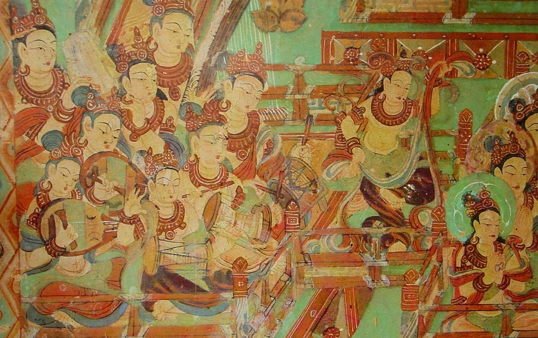
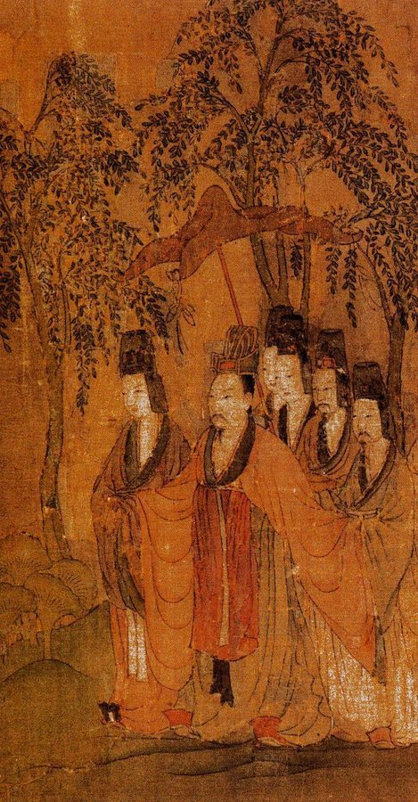
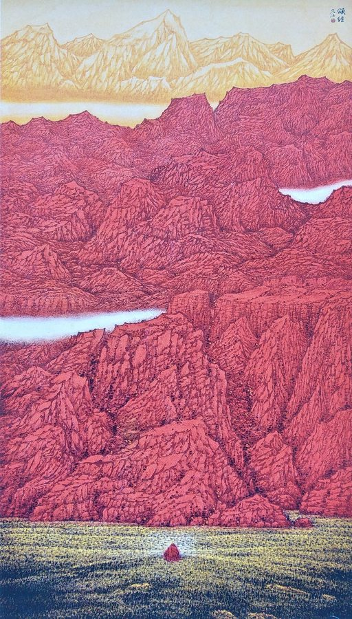
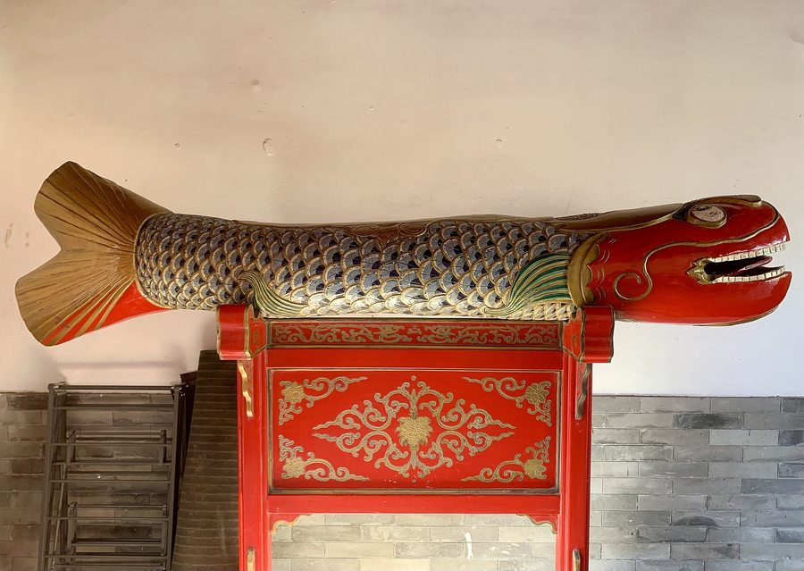
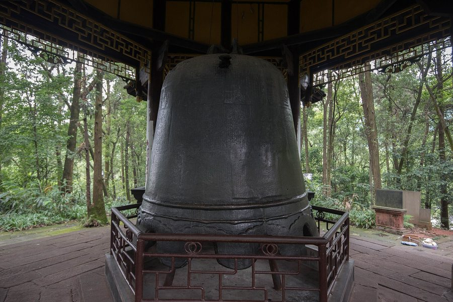
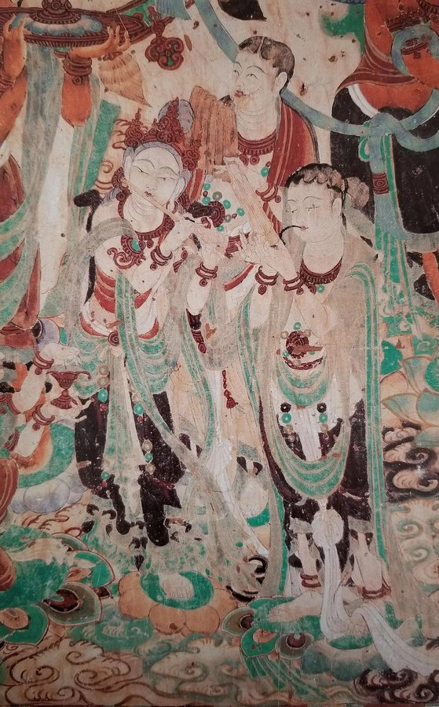

本页汇集已完成的经咒讽诵谱曲。每一部都可独立打开：逐字注音、五声音阶简谱、段落选择、进度跳转、变速播放。点卡片即入。
dabei-zhou.html），改其配置区的 HUI_ORDER / HUIS / HUI_CONFIG / PINYIN；
② 在本页 .grid 里于预留卡位之前插入一张 <a class="sc" href="新页.html">…</a>，
并把预留卡留在最后一位即可。「梵」是梵语「梵那摩」（Brahma）的略称，意为清净、离欲；「呗」是梵语「呗匿」「婆陟」（bhaṣā）的略称，意为赞颂、歌咏。合称「梵呗」，即以清净的言语赞叹诸佛菩萨的功德。丁福保《佛学大辞典》释：「音韵屈曲升降，能契于曲，为讽咏之声，是梵土之法曲，故名梵呗。」
也就是说，梵呗兼具「赞叹」与「止断」二义：一方面歌咏赞叹佛德，一方面借讽咏止断外缘、息却妄心，令身心寂静，方能成办一切法事。它源出印度五明之一的「声明」——天竺方俗，凡是歌咏法言，皆称为「呗」。
佛陀曾禁止以婆罗门法的声调吟咏经文，但许可「以清净梵音赞叹佛德、歌咏说法」。《十诵律》载：「为诸天闻呗心喜，故开呗声也。」《毗尼母经》则听许比丘从十二部经中取其「要言妙辞」，以讽诵方式「直显其义」。
佛教初传中土时有一个根本困难：「梵音重复，汉语单奇」——梵语偈颂音节繁复，汉语一字一音，两者难以相合，以致「金言有译，梵响无授」。
相传魏明帝太和年间（约 229—230），陈思王曹植游鱼山（今山东东阿县境），闻空中梵响，清扬哀婉，其声动心，独听良久。乃摹其音节，依《太子瑞应本起经》「撰文制音，传为后式」，创制六章汉语梵呗，一举解决了用汉语咏唱梵音的矛盾。《高僧传》称其所传「传声则三千有余，在契则四十有二」。
后世省称「梵呗」；因曹植登鱼山闻梵声而制呗，又称「鱼山梵呗」，曹植被尊为汉传佛教音乐（梵呗）的始祖。唐代传至日本，谓之「鱼山声明」；传至韩国，称「鱼山」。2008 年，「佛教音乐（鱼山梵呗）」被列入第二批国家级非物质文化遗产（项目编号 Ⅱ-138，山东省东阿县）。

印度的「呗」传入汉地后一分为二：
本系列谱曲属前一系：为经文与陀罗尼立讽诵调，五声音阶循环套用，句末自然落于稳定音（宫或徵），句与句之间留「气口」，段与段之间留一长呼吸。按传统，梵呗文本可归为赞、偈、咒、文、名号五类；其应用不出三方面——讲经仪式、六时行道（后世朝暮课诵）、道场忏法，而行仪通常分为初呗、中呗、后呗三节。

梵呗讲究「协谐律吕，符靡宫商」——以中国传统七声（宫、商、角、变徵、徵、羽、变宫）配合汉字四声（平、上、去、入）的起伏。《高僧传》形容理想的讽诵为：「三位七声，次而无乱；五言四句，契而莫爽。」风格上则求「清净、和雅、直声、吐纳抑扬」的自然真声。
本系列谱曲取其主干，用五声音阶：宫、商、角、徵、羽，即简谱的 1 2 3 5 6。避去半音（变徵、变宫），好处是任何字都能安稳落音、久诵不累，也不会因字调拗口而失了庄重——这正是「改梵为秦」以来汉传讽诵的核心经验。


伴奏的法器以打击乐为主：磬（大磬、引磬）、木鱼（大、小）、钟、鼓（中鼓、扁鼓）、铪、铛、钹、云板等。它们的作用不是旋律伴奏，而是「警醒合拍」——统一步伐、提醒板眼、庄严节奏，令大众讽诵齐整不乱。
梵呗自魏晋创始，普及齐梁，兴盛隋唐，传承宋元。唐代译场把梵呗列为九种职位之一；盛唐宫廷的七部乐、九部乐、十部乐中都有大量佛曲，寺院俗讲更使佛教音声深入民间。

东传：日本僧空海入唐，抄录《鱼山声明谱》（今藏京都东寺），将「变徵」对应日本「变角」、「变宫」对应「变羽」，梵呗遂在日本传唱；圆仁携归《梵呗次第》，成为日本天台宗「声明」的基础文本。
近代：1930 年代，弘一法师历时三年，往来泉州、厦门诸寺，把口传梵呗逐字标注音韵、凝固为乐谱，成《清凉歌集》；其中的《三宝歌》至今仍是汉传寺院必唱的赞歌。
主要参考：中国非物质文化遗产网「佛教音乐（鱼山梵呗）」条目 · 聊城市档案馆「鱼山梵呗」 · 中国新闻网释永悟访谈 · 慧皎《高僧传·经师篇》 · 佛教导航《梵呗略考》。